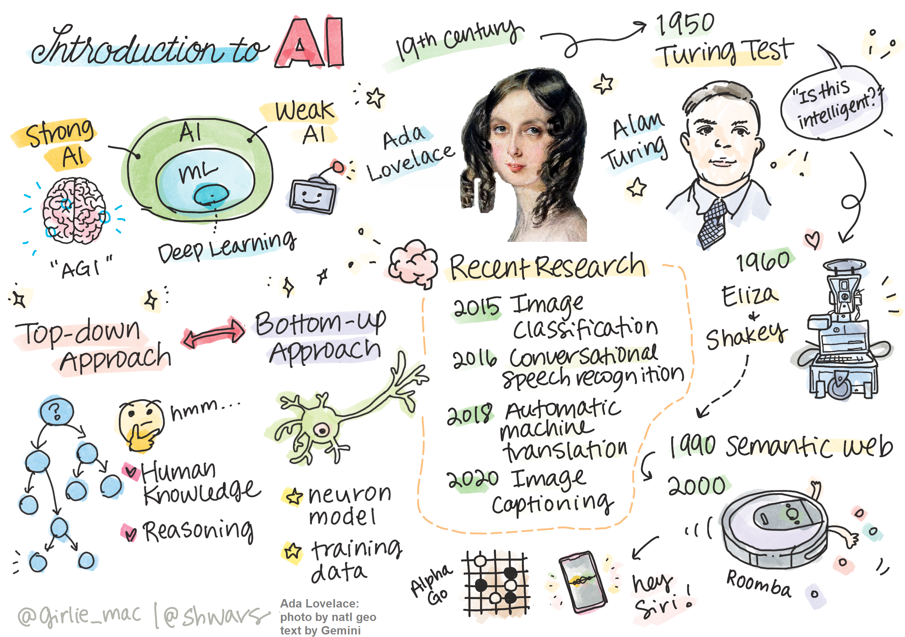
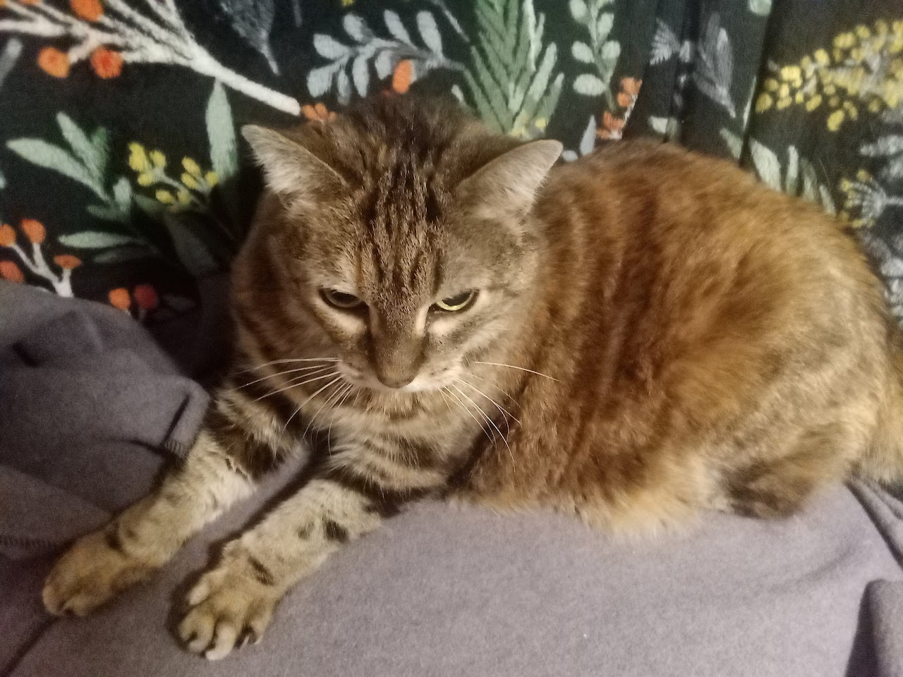

Ada & Alan
AI 101
Introduction to AI
Sketchnote by Tomomi Imura. Edits by Prof. Calvin
What is AI?
Working Definition
Artificial Intelligence is a scientific discipline that studies how we can make computers exhibit intelligent behavior, e.g. do those things that human beings are good at doing.
- Scientific - uses experimentation, publication, and falsification.
- Computers - based on the existing fields of computer science but also linguistics, philosophy, mathematics, and physics (or perhaps electrical engineering)
- Humans - measured against a human baseline
Computers
- Originally, programming was discovered by Ada Lovelace to operate on numbers following a well-defined procedure - an algorithm - like a recipe or knitting pattern.
- Modern computers are theoretical identical (through practically quite distinct)
- Thus it is possible to program a computer to do something if we know the exact sequence of steps that we need to do in order to achieve the goal.
How many years old?

Photo by Vickie Soshnikova
Intelligence?
- Defining the age of a person from their photograph is a task that cannot be explicitly programmed
- We do not know how we come up with a number inside our head when we do it!
- Oftentimes we wish to avoid estimating age…
- Hire/fire decisions, most notably!
Which is more beautiful?
Elowah Falls

Fairy Falls

Intelligence?
- There are some tasks that we do not explicitly know how to solve.
- Consider determining the age of a person from their photograph.
- We somehow learn to do it, because we have seen many examples of people of different age, but we cannot explicitly explain how we do it, nor can we program the computer to do it.
- This is exactly the kind of task that are of interest to Artificial Intelligence (AI for short).
Think/Pair/Share
✅ Think of some tasks that one may wish to offload to AI.
- Consider the fields like education, politics, medicine, and the arts.
- How are these fields interacting today with AI?
- Who benefits from the use of AI and who pays the costs?
Weak AI vs. Strong AI
- Early AI research differentiated two forms of AI
- Dicussion of the forms has become a much more popular distinction with the emergence of entreprise grade chatbots beginning with OpenAI ChatGPT
| Weak AI | Strong AI |
|---|---|
| Weak AI refers to AI systems that are designed and trained for a specific task or a narrow set of tasks. | Strong AI, or Artificial General Intelligence (AGI), refers to AI systems with human-level intelligence and understanding. |
| Weak AI | Strong AI |
|---|---|
| These AI systems are not generally intelligent; they excel in performing a predefined task but lack true understanding or consciousness. | These AI systems have the ability to perform any intellectual task that a human being can do, adapt to different domains, and possess a form of consciousness or self-awareness. |
| Weak AI | Strong AI |
|---|---|
| Examples of weak AI include virtual assistants like Siri or Alexa, recommendation algorithms used by streaming services, and chatbots that are designed for specific customer service tasks. | Achieving Strong AI is a long-term goal of AI research and would require the development of AI systems that can reason, learn, understand, and adapt across a wide range of tasks and contexts. |
| Weak AI | Strong AI |
|---|---|
| Weak AI is highly specialized and does not possess human-like cognitive abilities or general problem-solving capabilities beyond its narrow domain. | Strong AI is currently a theoretical concept, and no AI system has reached this level of general intelligence. |
Definitions
- One of the problems when dealing with the term “Intelligence” is that there is no clear definition of this term.
- One can argue that intelligence is connected to abstract thinking, or to self-awareness, but we cannot properly define it.
Intelligence?

Photo by Prof. Calvin
To see the ambiguity, try answering a question: “Is this cat (Ursula) intelligent?”
- (She is)
- (She is VERY smart)
Consider…
- Different people tend to give different answers to this question, as there is no universally accepted test to prove the assertion is true or not.
- And if you think there is - try an IQ test… What could go wrong.
By the way…
- It is common for IQ to enter conversations as a throwaway line in discussion of AI.
Think/Pair/Share
✅ Think for a minute about how you define intelligence.
- Is a crow who can solve a maze and get at some food intelligent?
- Is a traffic light intelligent?
- Is an ecosystem intelligent?
- Is a character in a novel or play?
The Turing Test
- When speaking about AI we need to have some way to tell if we have created a truly intelligent system.
- Alan Turing proposed a way called a Turing Test, which also acts like a definition of intelligence.
- Alan Turing the 🐐
- The test compares a given system to something inherently intelligent - a real human being, and because any automatic comparison can be bypassed by a computer program, we use a human interrogator.
Aside on Turing
- Turing, by cracking the enigma code used by Nazi war criminals, can be regarded as almost single-handedly winning the Western front for the allies in WWII.
- Turing was prosecuted by the British Empire for his sexuality until his death at 41 in 1953.
- Ask me how I feel about this but not during class.
Eugene Goostman
- One path to intelligence? Cheat!
A chat-bot called Eugene Goostman, developed in St. Petersburg, came close to passing the Turing test in 2014 by using a clever personality trick. It announced up front that it was a 13-year old Ukrainian boy, which would explain the lack of knowledge and some discrepancies in the text. The bot convinced 30% of the judges that it was human after a 5 minute dialogue, a metric that Turing believed a machine would be able to pass by 2000. However, one should understand that this does not indicate that we have created an intelligent system, or that a computer system has fooled the human interrogator - the system didn’t fool the humans, but rather the bot creators did!
✅ Have you ever been fooled by a chat bot into thinking that you are speaking to a human? How did it convince you?
Different Approaches to AI
If we want a computer to behave like a human, we need somehow to model inside a computer our way of thinking. Consequently, we need to try to understand what makes a human being intelligent.
To be able to program intelligence into a machine, we need to understand how our own processes of making decisions work. If you do a little self-introspection, you will realize that there are some processes that happen subconsciously – eg. we can distinguish a cat from a dog without thinking about it - while some others involve reasoning.
Different Approaches to AI
| Top-down Approach (Symbolic Reasoning) | Bottom-up Approach (Neural Networks) |
|---|---|
| A top-down approach models the way a person reasons to solve a problem. It involves extracting knowledge from a human being, and representing it in a computer-readable form. We also need to develop a way to model reasoning inside a computer. | A bottom-up approach models the structure of a human brain, consisting of a huge number of simple units called neurons. We can train a network of neurons to solve useful problems by providing training data. |
Different Approaches to AI
There are also some other possible approaches to intelligence:
- An Emergent, Synergetic or multi-agent approach are based on the fact that complex intelligent behaviour can be obtained by an interaction of a large number of simple agents. According to evolutionary cybernetics, intelligence can emerge from more simple, reactive behaviour in the process of metasystem transition.
- An Evolutionary approach, or genetic algorithm is an optimization process based on the principles of evolution.
Aside: CSAIL

The Top-Down Approach
- In a top-down approach, we try to model our reasoning.
- Because we can follow our thoughts when we reason, we can try to formalize this process and program it inside the computer.
- This is called symbolic reasoning, one example is grade-school algebra
The Top-Down Approach
- People tend to have some rules in their head that guide their decision making processes.
- At least according to them (go observe rush hour drivers for example)
- For example, when a doctor is diagnosing a patient, they may realize that a person has a fever, and thus there might be some inflammation going on inside the body.
- By applying a large set of rules to a specific problem a doctor may be able to come up with the final diagnosis.
The Top-Down Approach
- This approach relies heavily on knowledge representation and reasoning.
- Extracting knowledge from a human expert might be the most difficult part, because a doctor in many cases would not know exactly why they are coming up with a particular diagnosis.
- Sometimes the solution just comes up in their head without explicit thinking.
- Some tasks, such as determining the age of a person from a photograph, cannot be reduced to manipulating knowledge.
Bottom-Up Approach
- Alternately, we can try to model the simplest atomic elements inside our brain – a neuron.
- Obviously there are simpler elements (e.g. chemicals) but they take on different meaning in when not considered in isolation.
- Therefore they are not atomic, or indivisible units of “brain”.
Bottom-Up Approach
- We can construct a so-called artificial neural network inside a computer, and then try to teach it to solve problems by giving it examples.
- Allegedly this process is similar to how a newborn child learns about their surroundings by making observations.
- Simply program a computer to pretend to be however we think brains work.
- Of note, in some sense it doesn’t matter if we model the brain correctly or not.
A Brief History of AI
- Artificial Intelligence was started as a field in the middle of the twentieth century.
- Initially, symbolic reasoning was a prevalent approach, and it led to a number of important successes, such as expert systems – computer programs that were able to act as an expert in some limited problem domains.
- However, it soon became clear that such approach does not scale well.
Problems arise
- Extracting the knowledge from an expert, representing it in a computer, and keeping that knowledgebase accurate turns out to be a very complex task, and too expensive to be practical in many cases.
- This led to so-called AI Winter in the 1970s.

Image by Dmitry Soshnikov
Computers Emerge
- As time passed…
- Computing resources became cheaper, and
- More data has become available…
- So neural network approaches started demonstrating great performance in competing with human beings in many areas, such as computer vision or speech understanding.
In the last decade, the term Artificial Intelligence has been mostly used as a synonym for Neural Networks, because most of the AI successes that we hear about are based on them.
Chess
We can observe how the approaches changed, for example, in creating a chess playing computer program:
- Early chess programs were based on search – a program explicitly tried to estimate possible moves of an opponent for a given number of next moves, and selected an optimal move based on the optimal position that can be achieved in a few moves. It led to the development of the so-called alpha-beta pruning search algorithm.
Chess
We can observe how the approaches changed, for example, in creating a chess playing computer program:
- Search strategies work well toward the end of the game, where the search space is limited by a small number of possible moves. However, at the beginning of the game, the search space is huge, and the algorithm can be improved by learning from existing matches between human players.
- Subsequent experiments employed so-called case-based reasoning, where the program looked for cases in the knowledge base very similar to the current position in the game.
Chess
We can observe how the approaches changed, for example, in creating a chess playing computer program:
- Modern programs that win over human players are based on neural networks and reinforcement learning, where the programs learn to play solely by playing a long time against themselves and learning from their own mistakes – much like human beings do when learning to play chess.
- However, a computer program can play many more games in much less time, and thus can learn much faster.
Chatbots
Similarly, we can see how the approach towards creating “talking programs” (that might pass the Turing test) changed:
- Early programs of this kind such as Eliza, were based on very simple grammatical rules and the re-formulation of the input sentence into a question.
Chatbots
Similarly, we can see how the approach towards creating “talking programs” (that might pass the Turing test) changed:
- Modern assistants, such as Cortana, Siri or Google Assistant are all hybrid systems that use Neural networks to convert speech into text and recognize our intent, and then employ some reasoning or explicit algorithms to perform required actions.
Chatbots
Similarly, we can see how the approach towards creating “talking programs” (that might pass the Turing test) changed:
- Depending on who you ask, this is where we are now.
- If you ask me, “no”.
- My job is to know how to answer this question.
- If you ask Sam Altman, “yes”.
- Sam Altman’s job is convincingly say “yes” when asked this question.
- If you ask me, “no”.

Image by Dmitry Soshnikov, photo by Marina Abrosimova, Unsplash
Recent AI Research
- The huge recent growth in neural network research started around 2010, when two things happened.
- More compute.
- More data.
More compute
- A graduate students at UToronto affiliated with Prof. Hinton decided to use a GPU (graphics processing unit) instead of CPU (central processing unit) for image classification.
- This is the first documented usage of a graphics-intended compute device for general purpose - or perhaps general AI - usage - of which I am aware.
- This is not super well-documented and only something I became aware of “through the grapevine”.
- As an architecture researcher (e.g. I study GPU vs. CPU) I tend to think it’s a big deal.
- Read more here perhaps?
More data
- Genius 李飞飞 (Fei-Fei Li, my 🐐) said (paraphrasing) “why don’t we just label as many images as possible and see what happens”.
- A huge collection of images called ImageNet, which contains around 14 million annotated images, and led to the ImageNet Large Scale Visual Recognition Challenge.

The world changed quickly

- 2012 AlexNet is from the Toronto team and the “quantum leap” on here.
- In 2015, ResNet architecture from Microsoft Research achieved human-level accuracy.
- Universities solve the problem.
- Trillion dollar companies take the credit.
- Ask me about this outside of class.
Going forward
- Since then, Neural Networks demonstrated very successful behaviour in many tasks:
| Year | Human Parity (nominally) achieved |
|---|---|
| 2015 | Image Classification |
| 2016 | Conversational Speech Recognition |
| 2018 | Automatic Machine Translation (Chinese-to-English) |
| 2020 | Image Captioning |
Syllabus
- Bring a computer with internet access on Wednesday.
- Join the Discord - I owe you an email.
- Check out the syllabus